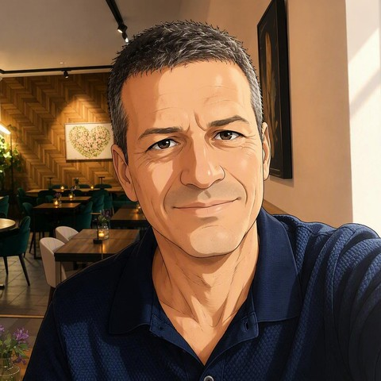

AvantGuard
פתרונות אקו-טכנולוגיים חדשניים, ובהם מערכת לייזר מבוססת AI להרחקת עגורים בעמק החולה.
קרא עוד ←
פתרונות משולבים לאתגרים מורכבים
פתרונות משולבים לאתגרים מורכבים - עיקרון זה מנחה את כל עבודתי המקצועית. לאחר כעשור של עיסוק בהוראה ובחינוך, שירתתי שנים רבות במשרד ראש הממשלה כאנליסט ומנהל מודיעין. מאז שנת 2020 אני מתמקד בייעוץ וניהול טכנולוגיות. בין השאר ניהלתי במשך מספר חודשים פרויקט לניטור אנטישמיות, נתתי שירותי מודיעין עסקי ללקוחות שונים וב-2024 ייסדתי כשותף מייסד ומנכ"ל את AvantGuard Eco-Technological Solutions, מתוך אמונה שטכנולוגיה מתקדמת יכולה לגשר בין צרכים אנושיים, כלכליים וסביבתיים. אני דובר עברית, אנגלית וגרמנית.
זיהוי הצורך המדויק שמאחורי כל שאלה, ומיצוי מידע ממקורות רבים ומגוונים לכדי תמונת מצב ברורה ופעילה.
ניהול תהליכי פיתוח מונחי בינה מלאכותית, תוך שילוב בין ראייה ניהולית לכלים טכנולוגיים מתקדמים.
התאמת טכנולוגיות מוכחות מתחום אחד למענה על אתגרים סביבתיים וחקלאיים בתחום אחר.
ניהול צוותים, תהליכים ומשאבים לאורך פרויקטים מורכבים ורב-שלביים.
פתרונות אקו-טכנולוגיים חדשניים, ובהם מערכת לייזר מבוססת AI להרחקת עגורים בעמק החולה.
קרא עוד ←מערכת שפיתחתי מן היסוד, המנטרת יומיום עיתונים מובילים בעולם ומפיקה השוואה בין המקורות השונים והאופן שבו כל אחד מהם ממסגר את אותם אירועים גאופוליטיים. פרויקט זה מהווה גם תרגיל מעשי בניהול תהליכי פיתוח מונחי בינה מלאכותית - גישה שכבר מעצבת גם את עבודת הייעוץ שלי.
קרא עוד ←פתרונות משולבים לאתגרים מורכבים - עיקרון זה מנחה גם את עבודת הייעוץ שלי. אני מביא לכל פרויקט שילוב של גישה טכנולוגית וניסיון ניהולי רב-שנים בפרויקטים מורכבים משולבי-טכנולוגיה, לצד יכולת לזהות טכנולוגיה שהוכיחה את עצמה בתחום אחד ולהתאימה, תוך שימוש במאפייניה ויתרונותיה היחסיים, למענה לאתגרים בתחום שונה לגמרי.
מתן שירותי מודיעין תחרותי, המשלבים הבנה עמוקה של העולם המודיעיני עם ביצוע מחקרים וחקירות ייחודיים. כל פרויקט נפתח במיצוי מדויק של הצורך - הגדרת השאלה המודיעינית שהלקוח נדרש למענה עליה, בין אם עניינה מועסקים, מועמדים, שותפים פוטנציאליים או מתחרים - וממשיך באיסוף מידע באמצעות מגוון כלים מעולם המודיעין הגלוי ומאגרי מידע נוספים. השירות ניתן ללקוחות עסקיים ברחבי העולם, והתוצר מונגש בבהירות ובדיוק ברמה הגבוהה ביותר, כולל המלצות מעשיות. מתודולוגיית ניתוח המידע ממקורות רבים ומגוונים העומדת בבסיס השירות הזה מלווה אותי גם בפרויקטים טכנולוגיים נוספים שאני מוביל.